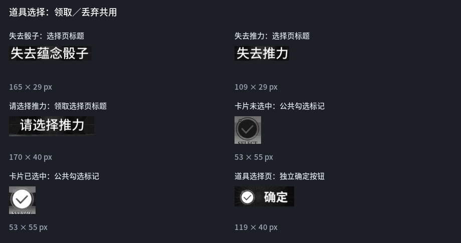
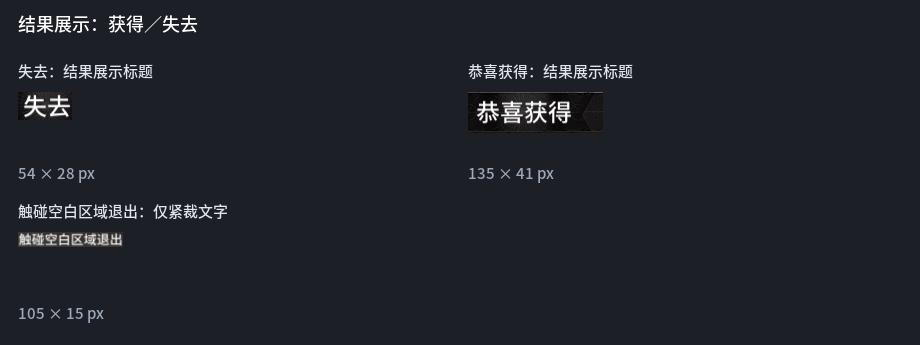
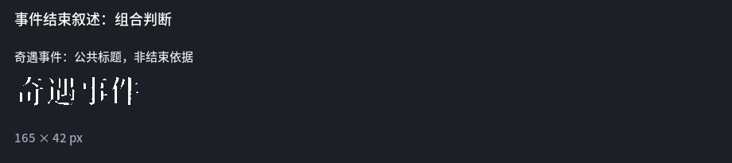
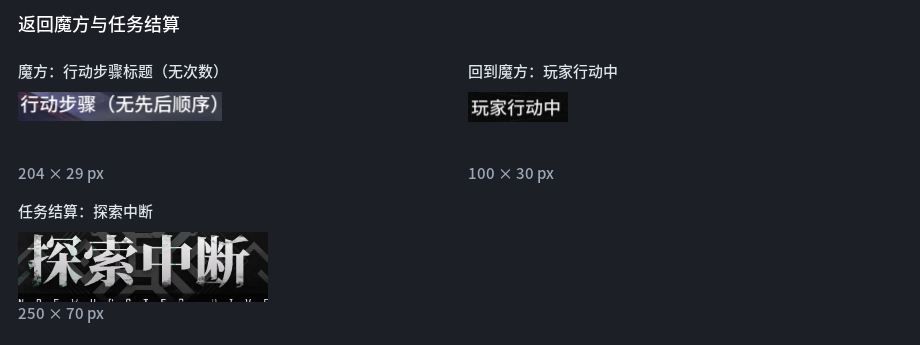
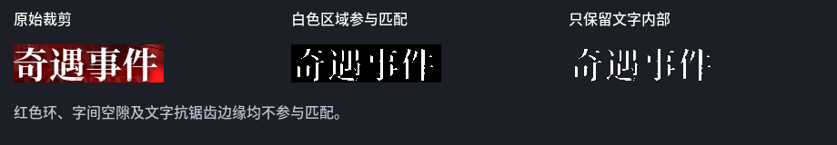
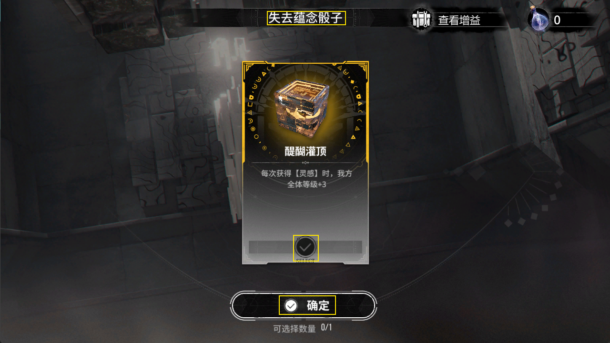
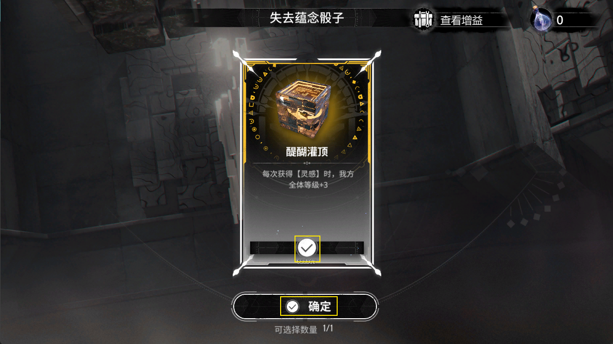
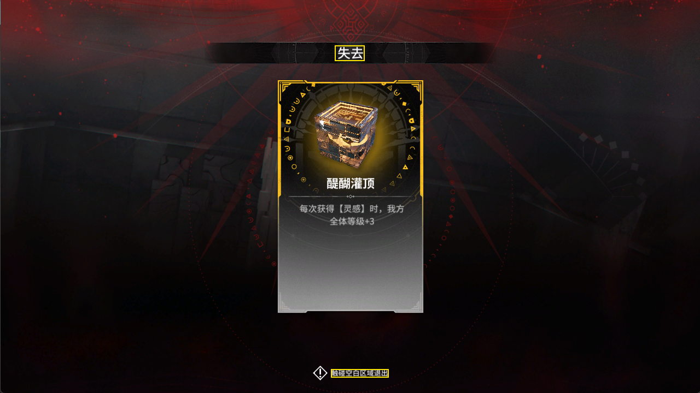
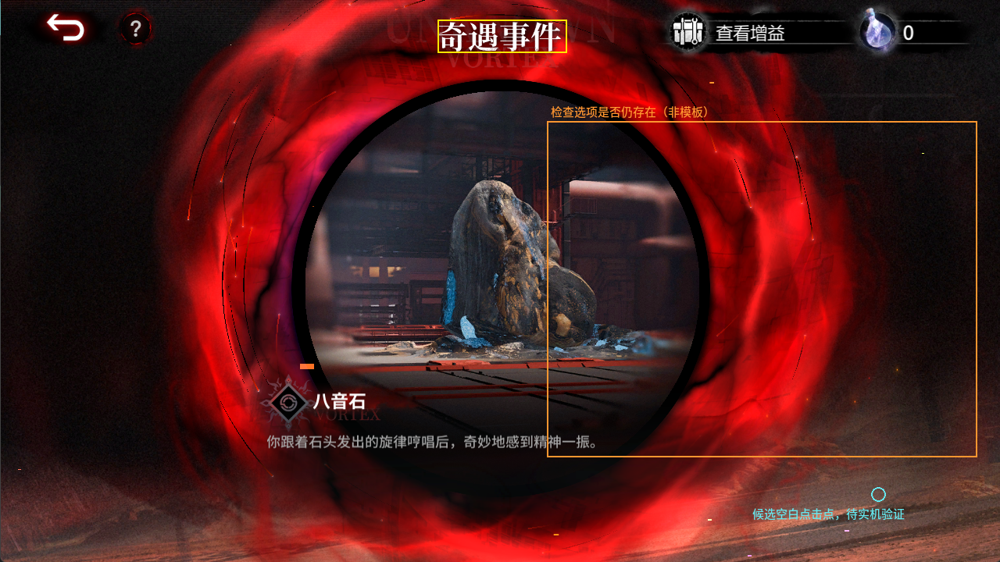
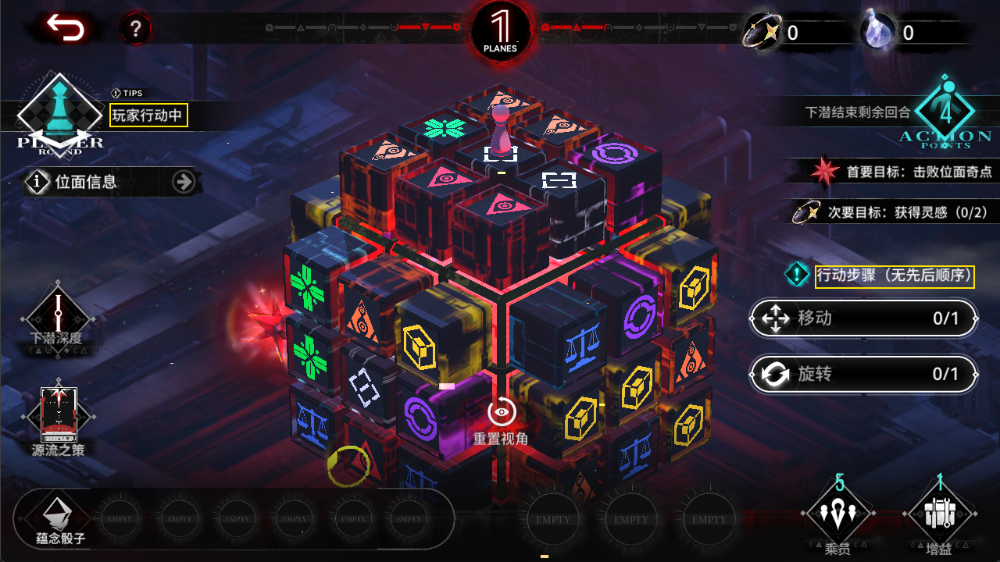

原始截图裁剪／复用既有控件模板，无 OCR，无生成重绘。黄色框为模板位置；橙框为结束页选项检查区，不是需要全图匹配的模板。尚未接入点击流程。不再识别八音石名称或选择数量；选中检查只确认目标卡片的勾选状态。返回魔方联合检查玩家行动中与行动步骤标题，不使用移动／旋转旁的0/1数字。





必须使用 event_heading_mask.png 作为匹配掩码；透明预览不能代替 matcher 的 mask 参数。红色环和文字边缘不参与匹配。该标题仅辅助确认事件页面，不单独判断结束。





强化结果标题、其他事件结束锚点、血量／货币短暂提示目前缺实际截图，不以虚构模板代替。结束判断须结合已提交事件的流程状态、选项消失、无选择／展示弹窗以及连续稳定画面；名称不参与识别，不能只凭标题或单帧选项缺失点空白。卡片位置通过公共勾选标记定位，不识别道具图案。不读取选择数量，当前按单选道具流程设计。